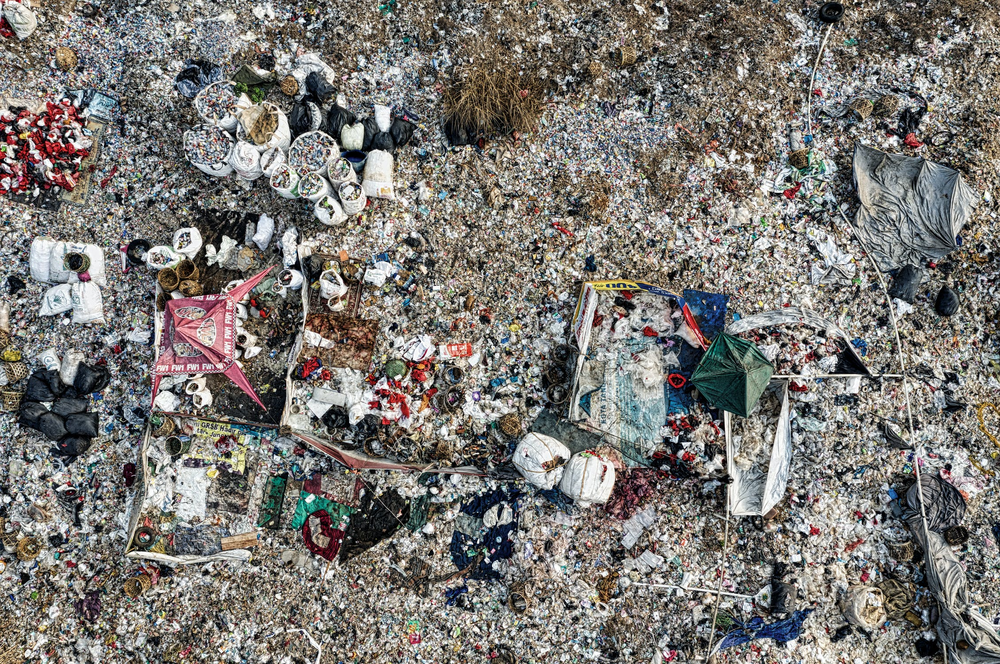

En el Día Mundial de los Océanos, Greenpeace alerta respecto de la creciente amenaza que el plástico está siendo para los ecosistemas marinos del planeta, cuestión que ha quedado en evidencia al haberse encontrado restos plásticos en la Antártida y hasta en las fosas más profundas del planeta, a más de 10 kilómetros de distancia de la superficie.
“Hace unas semanas se aprobó en la cámara la Ley que regula los plásticos de un solo uso, que debería ayudar a disminuir la contaminación por plásticos en nuestros mares, pero no es suficiente. Desde Greenpeace esperamos reducir los residuos que generamos y apostar por un modelo mucho más sostenible que el actual, donde los supermercados comiencen a ofrecer alternativas a sus consumidores", sostiene Soledad Acuña, vocera de Chile sin Plásticos, de Greenpeace.
Cada vez se producen más objetos de plástico, todo viene envuelto en paquetes de plástico: frutas, verduras, tallarines. Cuando nos deshacemos de ellos pueden acabar en un vertedero, ser incinerados o reciclados. Sin embargo, debido a la acción del viento y la lluvia, estos residuos también pueden llegar al mar incluso cuando los tiramos a la basura.
“Muchas veces somos parte de la problemática ocasionada por el consumismo, porque carecemos de la información necesaria para ser capaces de sopesar los impactos que nuestro consumo tiene en el medioambiente. Debemos exigir alternativas a las empresas. Hoy en día solo el 9% de todo el plástico que hemos producido y consumido hasta la actualidad a nivel mundial se ha reciclado, el 12% se ha incinerado, y la gran mayoría, el 79%, ha terminado en vertederos o en el medio ambiente, indican desde Greenpeace.

Debido a que el plástico es muy persistente y se dispersa fácilmente, se pueden encontrar en todos los rincones del planeta, desde el Ártico hasta la Antártida. Una vez los objetos de plástico llegan al mar pueden ser ingeridos por la fauna marina y acumularse en su interior, pueden quedarse en suspensión o flotando en la superficie, pueden finalmente hundirse y permanecer en el fondo marino, o incluso pueden quedar atrapados en el hielo del Ártico.
El Tratado: la última esperanza de los océanos
En aguas internacionales, la sobrepesca, los vertidos ilegales o la piratería disfrutan de libertad, no suponen ningún delito. La aprobación del Tratado Global de los Océanos puede ser el punto de inflexión en esta catastrófica deriva.
Por eso los gobiernos y organizaciones de todo el mundo están trabajando en ultimar un Tratado Global de los Océanos que sirva para sentar unas bases para su protección. Los retos son numerosos: combatir la acidificación de las aguas, la contaminación por plásticos, los vertidos, la pesca ilegal. Según recoge Naciones Unidas, las soluciones implican tecnología verde y un uso de los recursos basado en la innovación.
La negociación entre los Estados, aunque se ha retrasado por la pandemia, está en marcha. Naciones Unidas ha celebrado varias reuniones y hay nueva fecha para la Conferencia Mundial de los Océanos, el encuentro en el que se pretende formalizar el acuerdo se celebrará en Lisboa en 2022.
Organizaciones ecologistas como Greenpeace se muestran optimistas “estamos ante una oportunidad única y significaría la protección de los océanos para el 2030. Eso es esperanza. De momento, al menos, hay esta solución”, explica la responsable de Biodiversidad en Greenpeace, Pilar Marcos, pero observan con cautela el ritmo de las negociaciones. “Sin un marco sólido para trabajar, los organismos regionales y sectoriales pueden no tener en cuenta la forma en que sus decisiones interactúan con las de otros, lo que aumenta la complejidad de los muchos problemas que afectan al océano”, apunta Greenpeace.
Los principales problemas
Vayamos al detalle. En más de la mitad de nuestros mares, el 55% de su superficie, se desarrollan actividades pesqueras, según datos de Greenpeace. Se trata de cinco naciones gestionando el 77% de la flota (una de ellas es España). Solo en las aguas de África Occidental se extraen cada año 500.000 toneladas de peces que acaban convirtiéndose en piensos para la acuicultura y la agricultura, suplementos dietéticos, cosméticos y productos alimenticios para mascotas. “El Tratado tiene muy buenas intenciones, pero todo lo relativo a la minería de profundidad y a la pesca es complicado de resolver. Ahora tendrán que decidir si la pesca se cogestionará entre los estados o no entrará finalmente en el Tratado”, señala Marcos.
En la misma línea está el problema de las 'sopas de plásticos': “El 80% de los plásticos que encontramos en el mar viene de la tierra y a consecuencia de las corrientes marinas, se forman estas concentraciones. Es tremendo; cada segundo, 200 kilos de basura van a parar a los océanos y estos niveles de plástico han aumentado en un 900% con respecto a los niveles de 1980”, especifica Pilar.
Además, hay que tener en cuenta que en los océanos los efectos siempre se ven a más largo plazo y perduran más en el tiempo que sobre la superficie terrestre. “Así, ese plástico va a perdurar en el océano 500 años de media”. “Pero si hablamos del océano más desprotegido del planeta este sería el Ártico” y aquí de nuevo el quid de la cuestión, el cambio climático. En verano sus temperaturas medias son entre 2 y 3ºC más cálidas que la media entre los años 1982 y 2010. Esto es algo que ya afecta a muchas de sus especies. Por poner un ejemplo, el número de pingüinos barbijo en la Antártida ha disminuido en casi un 60% desde la última vez que se hizo un recuento, a principios de los años 70, y en algunos casos, las colonias han perdido hasta el 77% de su población.

El progresivo aumento de temperaturas está provocando el incremento de la frecuencia de los superhuracanes, el deshielo de los casquetes polares (hemos perdido el 75% del volumen de hielo marino del Ártico desde que comenzamos a medirlo con satélites) y eventos masivos de blanqueamiento de corales.
También la búsqueda de petróleo y minerales en los mares profundos está poniendo en riesgo la vida marina y está interrumpiendo, además, las reservas de carbono azul, tal y como recoge el informe de Greenpeace, En aguas profundas. Por este motivo insisten en “que ponga la conservación -y no la explotación- en el centro de la gobernanza de los océanos”.
La esperanza está en que todos cuidemos de nuestros mares y, sobre todo, en la aprobación del este Tratado Global de los Océanos.